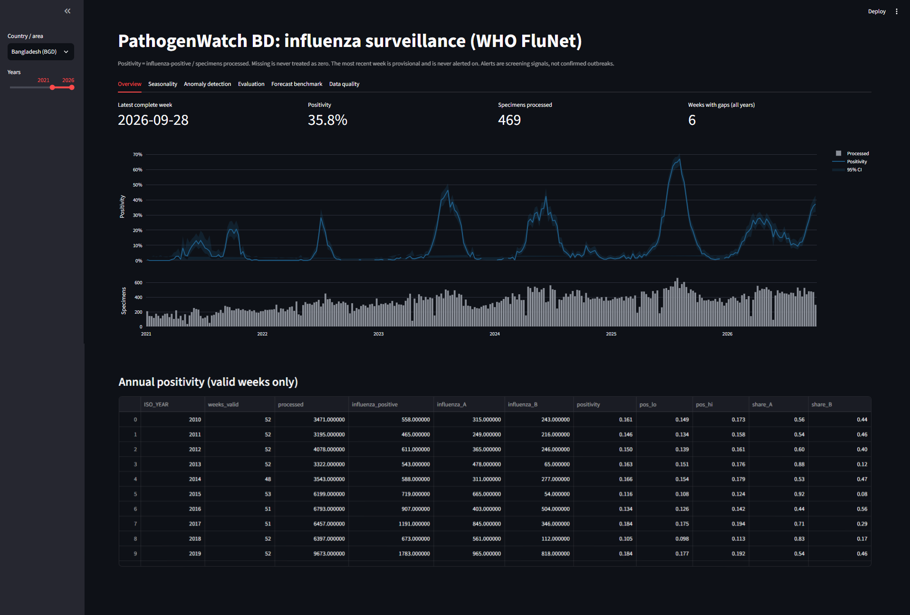
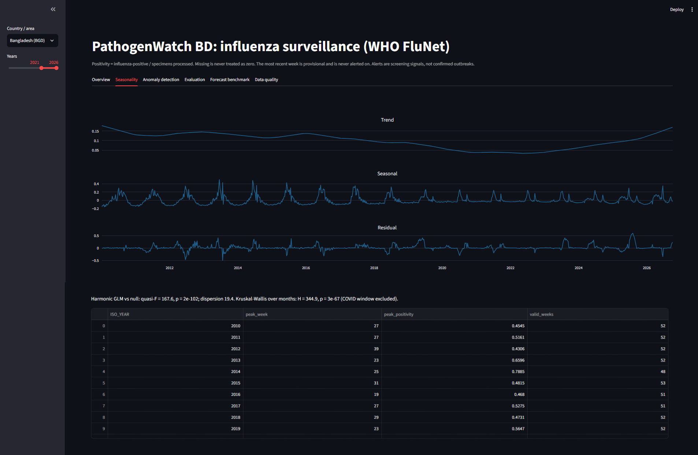
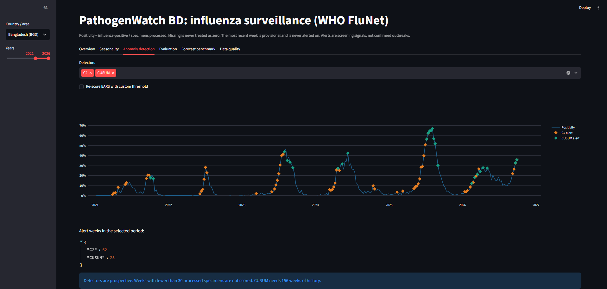
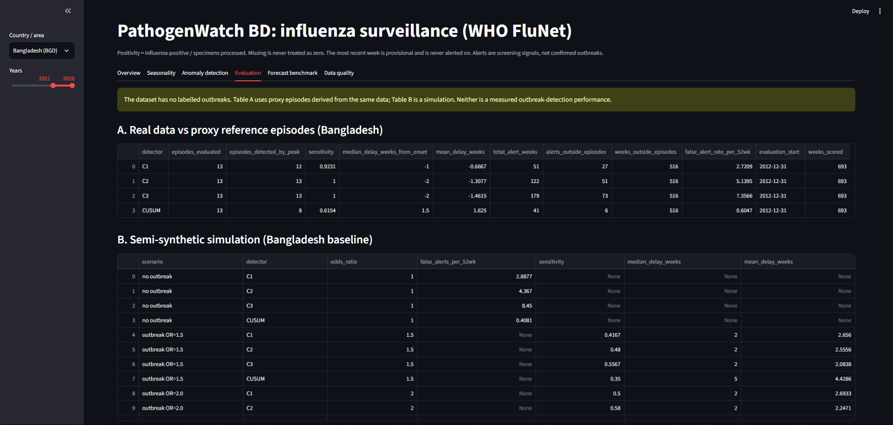
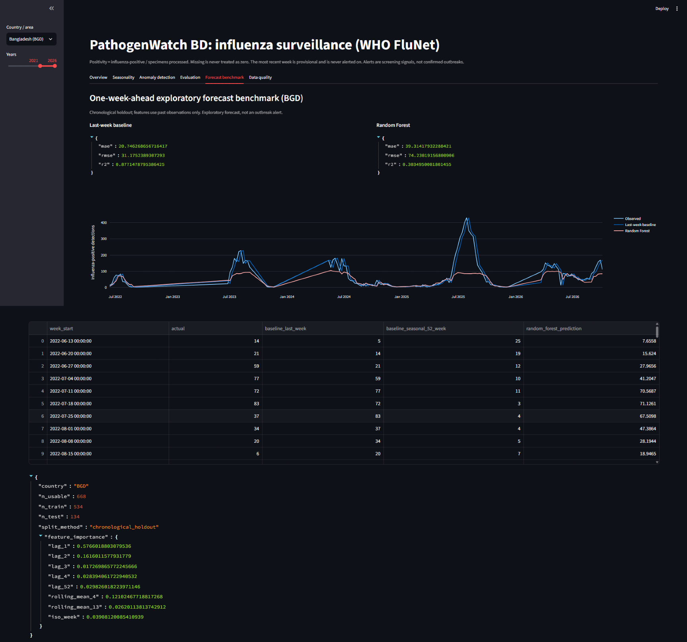
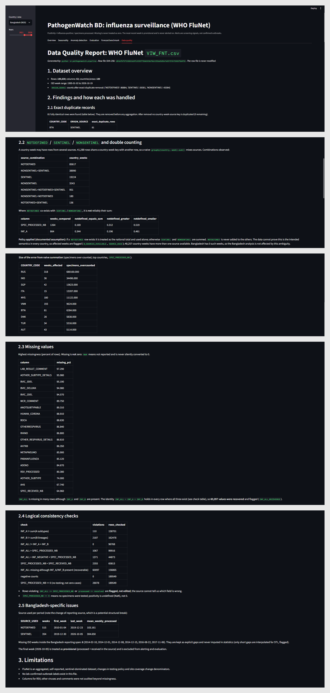
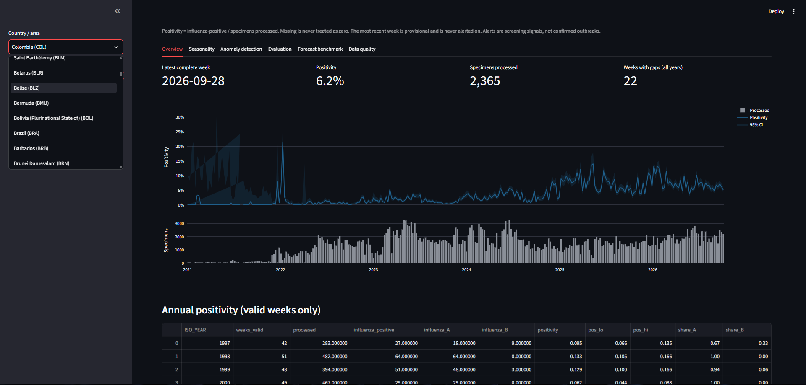

Latest weekly positivity
12.8%
●Latest complete week · illustrative
A clearer view of surveillance signals, seasonal patterns, and model performance.
Duplicate rows, overlapping source categories, and missing reporting weeks can distort downstream conclusions. The pipeline audits the source before analysis.
See quality controls ↗Positivity is meaningful only alongside its denominator. When no specimens were processed, the rate is undefined, not zero.
Explore epidemiology ↗A more complex model is not automatically better. In the saved evaluation, the last-week baseline beat Random Forest on both MAE and RMSE.
Review benchmark ↗Inspect duplicates, missingness, source combinations, and data consistency.
Apply documented source rules and build country-week series.
Summarize positivity, denominators, uncertainty, and seasonal patterns.
Run prospective anomaly methods and chronological forecast benchmarks.
| Country / area | Positivity | Processed | Trend | Status |
|---|
Duplicate, missingness, and source-combination checks.
Screening flags are not confirmed outbreak events.
Last-week baseline outperformed Random Forest in saved tests.
Explore positivity alongside the number of specimens processed. The values below are illustrative UI data, not current WHO surveillance records.
Positivity should be interpreted with specimen volume and reporting coverage.
If no specimens were processed, positivity is undefined. Missing weeks should not be silently converted to zero.
Remove exact duplicates before aggregation.
Avoid double-counting overlapping source rows.
Use 95% Wilson intervals for positivity estimates.
Seasonal structure can help describe recurring patterns, but it does not by itself explain their causes.
Separates trend, seasonal component, and residuals using a 52-week period.
Uses two annual harmonics to characterize recurring structure.
Compares distributions across calendar months.
Observed seasonal patterns can be influenced by testing volume, surveillance coverage, reporting practice, and unusual periods.
Review statistical flags as prompts for investigation, not as proof of an outbreak.
| Week | Detector | Signal | Interpretation | Review state |
|---|
Compare simple baselines with a machine-learning model using chronological evaluation.
This project does not assume that machine learning must win. The evaluation preserves chronological order and compares Random Forest against simple baselines. The recorded results show that the last-week baseline performed better, which is an important model-selection finding rather than a failure to hide.
R² is shown for the chronological holdout only. Metrics are dataset-specific and retrospective.
A transparent view of data checks and source-handling decisions in the analysis pipeline.
| Check | Purpose | Policy / handling | Status |
|---|---|---|---|
| Exact duplicates | Prevent repeated records affecting totals | Remove before aggregation | Documented |
| Missingness | Understand incomplete reporting | Keep missing reporting weeks explicit | Documented |
| Source combinations | Identify possible overlapping rows | Apply source-selection policy | Documented |
| `INF_ALL` recovery | Check internal count identity | Recover only when `INF_A + INF_B` supports it | Documented |
| Zero denominator | Avoid invalid positivity estimates | Positivity remains undefined | Documented |
| Raw-file checksum | Support reproducibility | Record SHA-256 checksum | Documented |
`NOTDEFINED`, `SENTINEL`, and `NONSENTINEL` rows may need careful source selection to avoid double counting.
Missing reporting weeks should remain visible instead of being treated as zero activity.
20261020
`pyproject.toml`
`python -m pytest -v`
PathogenWatch BD brings data-quality decisions, epidemiological summaries, anomaly-screening methods, and time-aware model evaluation into one reproducible workflow. This interface is a demonstration layer; the repository contains the analytical implementation and generated artifacts.
A visual walkthrough of the actual PathogenWatch BD Streamlit implementation, taken from this project's GitHub repository.

Country selection, latest-week indicators, positivity trend, specimen volume, and annual summary.

Trend, seasonal and residual components, with seasonal statistics and annual peak summaries.

Prospective EARS and CUSUM signals plotted against the positivity series.

Proxy reference episodes and semi-synthetic simulation results, with interpretation caveats.

Chronological holdout predictions, baseline and Random Forest comparison, and prediction artifacts.

Audit findings, duplicate handling, missingness, logical checks, and Bangladesh-specific notes.

Country/area selector and the dashboard's response to another available surveillance series.
screenshots/ folder, with a GitHub-hosted fallback. When publishing this HTML as index.html in the same repository, keep the screenshots/ folder alongside it so the images can load locally and on GitHub Pages.